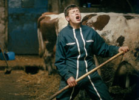

|
L'APPRENTI
THE APPRENTICE
Samuel Collardey | F 2008 | 85 Min.
Material: 35mm
Format: 35mm
Originalsprache: Französisch
Drehbuch: Samuel Collardey, Catherine Paille
Kamera: Samuel Collardey, Charles Wilhelem
Ton: Vincent Verdoux, Julien Roig
Schnitt: Julien Lacheray
Mit Matthieu Bulle, Paul Barbier
Produktion: Grégoire Debailly, Michel Reihlac
Vertrieb: Lazennec
www.lapprenti-lefilm.com
Bester Erster Film, Prix Louis Delluc 2008 | Mention spéciale et Prix de la Semaine de la Critique Cannes 2008
Der 15-jährige Mathieu, Schüler einer Landwirtschaftsschule, ist Lehrling auf dem Bauernhof von Paul, der auf der Hochebene im Département Doubs eine kleine Milchwirtschaft betreibt. Mit ihm entdeckt Mathieu den Beruf des Bauern mit allen Kniffen und Klippen, lernt aber auch das Leben an sich kennen. Samuel Collardey gelingt es durch sein Spiel mit den Regeln der Fiktion und Dokumentation, ein sensibles Porträt der Jugend und des ländlichen Raumes zu zeichnen.
Samuel Collardey stammt aus der Region Haut-Doubs. 2001 beginnt er seine Ausbildung an der Pariser Filmhochschule FEMIS, arbeitet als Kameramann bei zahlreichen Kurzfilmen und präsentiert 2005 seinen Abschlussfilm "Du soleil en hiver", der auf mehreren Festivals, insbesondere in Cannes, Anerkennung findet.
Filme: Du soleil en hiver 2005 | L'apprenti 2008
zurück
|